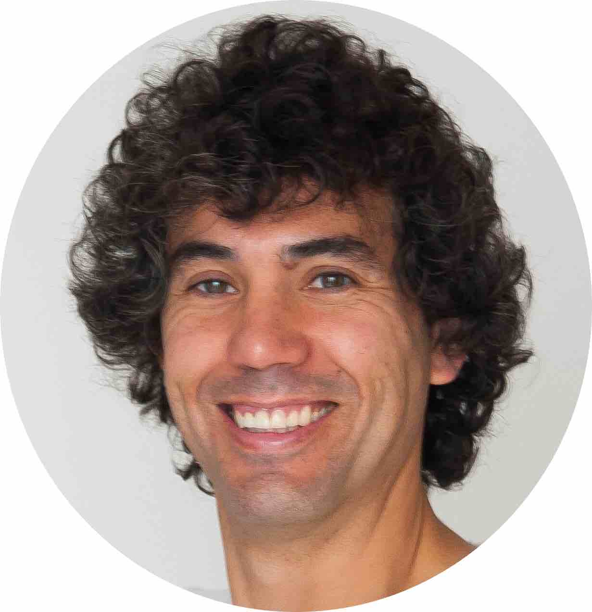
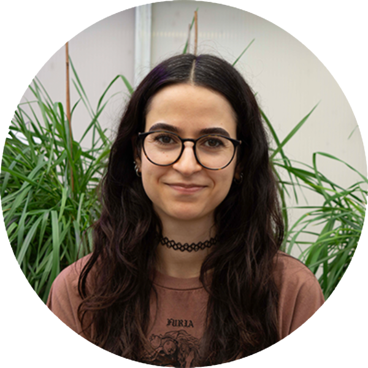
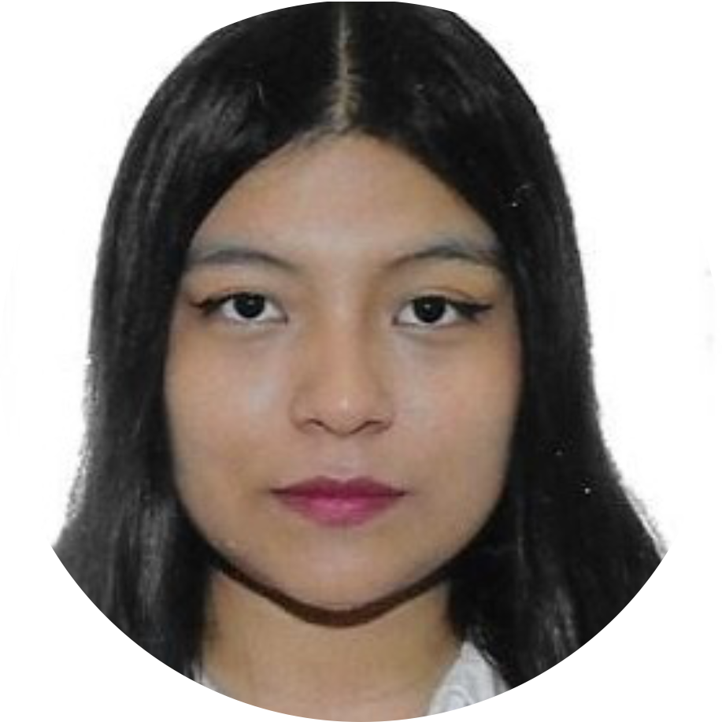
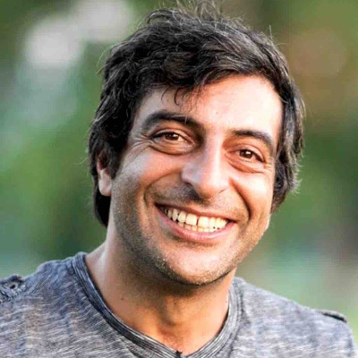

Our People
Meet the Team

Julio Isidro y Sánchez
Group Leader · Tenured Scientist
Tenured Scientist at Spanish National Research Council and Group Leader at CBGP. His research focuses on quantitative genetics, genomic selection, and the development of computational tools for crop improvement. He has led projects funded by the EU Horizon 2020, and AEI and with industry partners across Europe, North America and Asia.
Current Members


Inés Vegas Lorenzo
Technician
Alumni

Naomi López Angulo
Technician
Angela Cardozo
Technician
Juan Manuel Gallego Rabadan
Master Student

Deniz Akdemir
Be The Match
Simon Rio
CIRAD, Montpellier